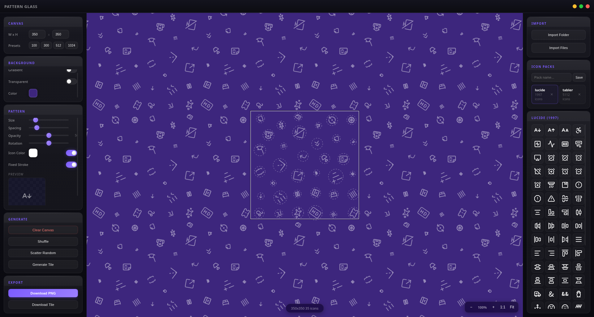

Place SVG icons on a tileable canvas, move them around, resize, rotate — build beautiful repeating patterns. Electron + React + Canvas, dark glass UI, ~7000 icons included.

Pattern repeats infinitely in all directions via offscreen tile caching. Zoom in and out, drag to pan — the canvas is boundless.
Click to select, drag to move. Corner handle to resize, top handle to rotate. Delete with Backspace.
Lucide (~1100) + Tabler Icons Outline (~5900). Import custom SVG/PNG folders or individual files.
Solid color, linear gradient with live editor, or transparent with checkerboard preview. Export preserves transparency.
Apply a single color to all placed icons at once via source-in compositing. Fixed-stroke SVG keeps lines crisp at any size.
Native save dialog, exact canvas pixel dimensions. Transparent backgrounds export cleanly.
Requires Node.js 18+. The build script bundles TypeScript with esbuild and copies default icons from node_modules.